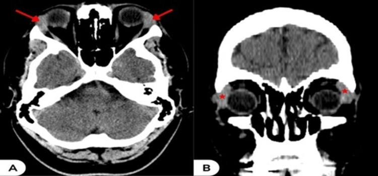
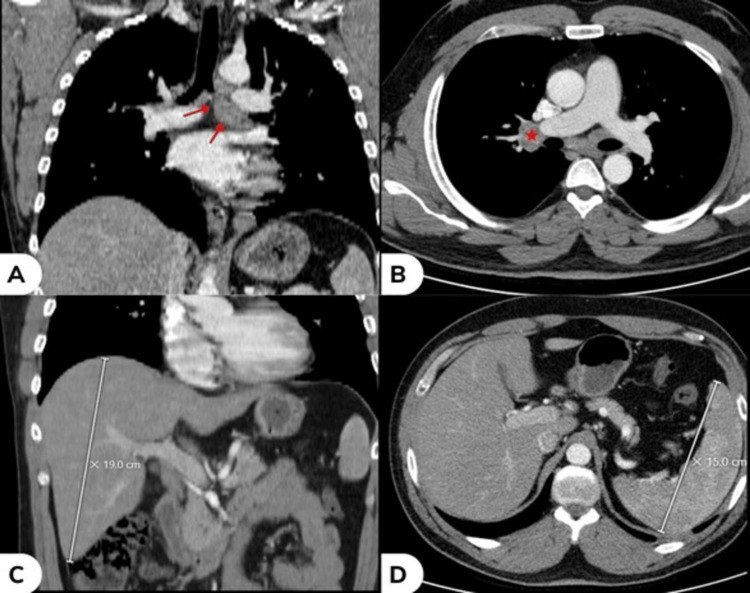
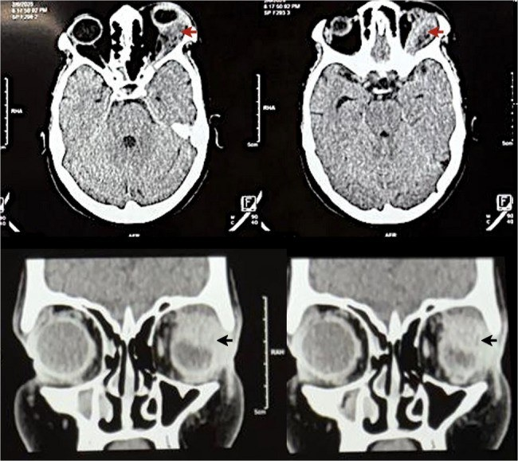
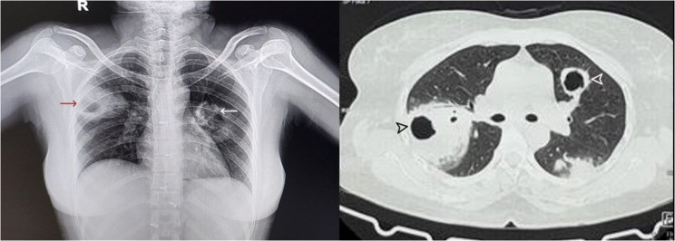
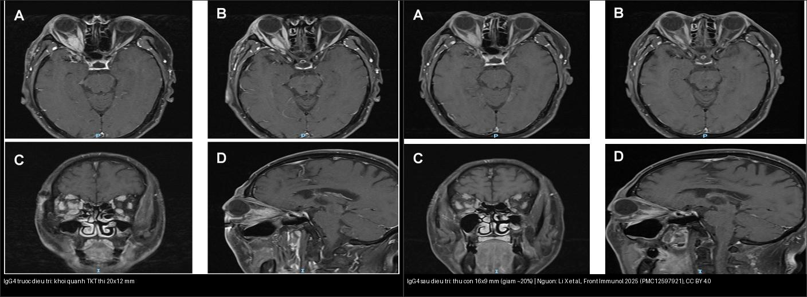
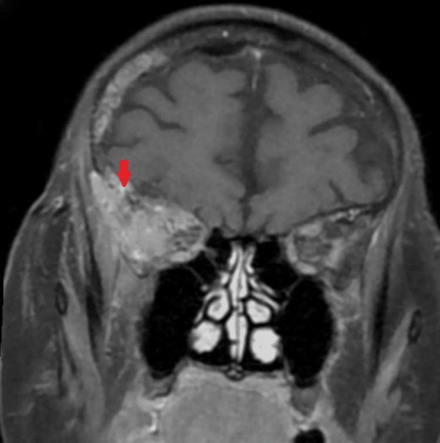

451 — Biểu hiện mắt của bệnh hệ thống / Systemic diseases in the eye
Tags: pattern:toan-than-mat vung:hoc-mat score:IgG4 protocol:CT-MRI-hoc-mat protocol:sinh-thiet
Mức chắc chắn (certainty): tổng hợp y văn (literature synthesis) — nhóm tự biên từ y văn mở 2023–2025 (Cureus CC BY + BMC Ophthalmol CC BY + Front Immunol CC BY), chưa gắn ca nguyên văn đơn lẻ.
1. Tổng quan — mắt là "cửa sổ toàn thân", kháng thể định hướng trước sinh thiết
- Viêm/u hốc mắt mạn, tái phát, hai bên hoặc đa cơ quan thường là biểu hiện của bệnh hệ thống (sarcoid, viêm mạch ANCA/GPA, IgG4, lymphoma) chứ không phải bệnh mắt đơn thuần.
- TẠI SAO kháng thể + tổng thể trước sinh thiết: ANCA (GPA), IgG4 huyết thanh, ACE + CT ngực (sarcoid), TRAb (Graves) rẻ, ít xâm lấn và định hướng chẩn đoán; sinh thiết chỉ khi không điển hình/kháng trị — nhưng không được để steroid che mờ lymphoma.
- Số nằm lòng: IgG4 huyết thanh ≥ 135 mg/dL + mô > 10 tương bào/HPF; sarcoid hay có hạch rốn phổi + hạch trung thất hai bên + ACE tăng; GPA với ANCA (+) + tổn thương xoang/thận/phổi hoại tử; tocilizumab/rituximab là liệu pháp tiết kiệm steroid theo bệnh.
- Orbital sarcoidosis là thể hiếm, thường MỘT bên, có thể tổn thương tuyến lệ, thần kinh thị, cơ vận nhãn, mí mắt; chẩn đoán phân biệt GPA, bệnh tuyến giáp, IgG4, viêm xơ hốc mắt.
2. Mẫu hình + chẩn đoán phân biệt theo mẫu hình (gamut)
- Tuyến lệ to hai bên, không đau + hạch trung thất → sarcoid (bài 424).
- Khối hốc mắt "xâm lấn xuyên khoang" (cả ngoài + trong nón) + mũi xoang/thận/phổi → GPA (ANCA).
- Khối quanh thần kinh thị/cơ, đa cơ quan, đáp ứng steroid → IgG4.
- Khối già không đau, không đáp ứng steroid, tái phát như "cellulitis" → lymphoma (sinh thiết chốt).
- Gợi nhớ "S-G-I-L": Sarcoid (hạch rốn phổi) · GPA (ANCA) · IgG4 (đa cơ quan) · Lymphoma (già, kháng trị).
3. Bảng so sánh phân biệt (ma trận đối chiếu)
| Thực thể (entity) | Hình ảnh + toàn thân | Chốt vào (rule-in) | Chốt loại (rule-out) | Gợi ý xác nhận |
|---|---|---|---|---|
| Sarcoid | Tuyến lệ to hai bên + cơ/hốc mắt; hạch rốn phổi/subcarinal hai bên; gan–lách to | Hạch rốn phổi hai bên + ACE tăng + tổn thương không hoại tử | Hoại tử xoang + ANCA → GPA | CT ngực + ACE + sinh thiết (u hạt không hoại tử) |
| GPA | Khối hốc mắt xuyên khoang (ngoài + trong nón), bờ không rõ + xoang hoại tử, nốt phổi hang | ANCA (+) + hoại tử + đa cơ quan (mũi/thận/phổi) | Không hoại tử, ANCA âm → sarcoid/IgG4 | ANCA + sinh thiết xoang/phổi |
| IgG4 | Khối quanh thần kinh thị/cơ + đa cơ quan, hai bên, đáp ứng steroid | IgG4 máu ≥ 135 mg/dL + > 10 tương bào/HPF + đa cơ quan | Đau cấp một bên, một ổ → giả u/cellulitis | IgG4 huyết thanh + sinh thiết |
| Lymphoma | Khối già, một bên, không đau; tái phát như "cellulitis", không đáp ứng steroid | Tuổi cao + kháng trị + tái phát cùng chỗ | Đáp ứng nhanh steroid → viêm | Sinh thiết (tránh steroid trước) + huyết học |


Trên: sarcoid hốc mắt — tuyến lệ to hai bên (A: axial; B: coronal). Dưới: cùng bệnh nhân — hạch dưới carina + hạch rốn phổi phải + gan–lách to (A–D): biểu hiện mắt chỉ là "phần nổi" của bệnh hệ thống. Nguồn: Saifi M et al., Cureus 2023 (PMC10696406), CC BY 4.0.

*Trái: GPA — khối đặc xuyên khoang (extra + intraconal), bờ không rõ ở hốc mắt trái, gây lồi mắt trục. Phải: HRCT ngực — nhiều nốt hang ở phổi. Bộ đôi "hốc mắt + phổi hang" + ANCA = chốt GPA (không hoại tử thì nghĩ sarcoid/IgG4). Nguồn: Bhatia S et al., BMC Ophthalmol 2025 (PMC12542495), CC BY 4.0.*
*Trái: IgG4 — khối dạng hình thoi quanh thần kinh thị phải (20 × 12 mm) từ đoạn nội ống. Phải: sau điều trị steroid/ức chế miễn dịch — khối co còn 16 × 9 mm (~20%), bờ rõ hơn. Nguồn: Li X et al., Front Immunol 2025 (PMC12597921), CC BY 4.0. Ảnh ghép letterbox.*Quiz composite: hai bệnh nhân khối hốc mắt đáp ứng steroid khác nhau thế nào — ai cần sinh thiết trước, ai cần xét nghiệm máu trước?
Bấm để hiện đáp án
- IgG4 (trái/phải kèm nhau): đáp ứng steroid rõ → xét nghiệm IgG4 huyết thanh (≥ 135 mg/dL) + tìm tổn thương đa cơ quan trước khi cân nhắc sinh thiết; theo dõi thể tích khối trên MRI.
- Nếu khối già không đáp ứng steroid → nghĩ lymphoma, phải sinh thiết (tránh cho steroid vì che mờ mô bệnh).
- Chốt: đáp ứng steroid + đa cơ quan = IgG4; kháng trị + tuổi cao = lymphoma.
4. Protocol chụp & xét nghiệm
- Hình ảnh một lượt: CT + MRI hốc mắt (T1 fat-sat sau tiêm + T2 fat-sat) để định vị trong/ngoài nón, xuyên khoang; CT ngực (hạch rốn phổi/nốt hang) + siêu âm/CT bụng khi nghi sarcoid/IgG4 đa cơ quan.
- Xét nghiệm định hướng: ANCA (GPA) · IgG4 huyết thanh ≥ 135 mg/dL + > 10 tương bào/HPF (IgG4) · ACE + canxi (sarcoid) · TRAb/TSH (Graves) · LDH/tủy (lymphoma).
- Sinh thiết khi không điển hình/kháng trị/không đáp ứng steroid — lấy mô trước khi cho steroid nếu nghi lymphoma.
- Thuốc: sarcoid/IgG4 → prednisolone 1 mg/kg rồi giảm dần; GPA → cyclophosphamide/rituximab + steroid; lymphoma → hóa trị theo mô bệnh học.
flowchart TD
A[Viem/u hoc mat MAN - tai phat - 2 ben / da co quan] --> B{Co huyet thanh dinh huong?}
B -->|Hach ron phoi + ACE cao| C[Sarcoid - CT nguc + sinh thiet u hat khong hoai tu]
B -->|ANCA duong| D[GPA - xoang/than/phoi hoai tu + sinh thiet]
B -->|IgG4 >= 135 mg/dL| E[IgG4 - da co quan - theo doi the tich tren MRI]
B -->|Tuoi cao - khong dap ung steroid| F[Lymphoma - SINH THIET truoc steroid]
C --> G[Prednisolone 1 mg/kg giam dan]
E --> G
D --> H[Cyclophosphamide/rituximab + steroid]
F --> I[Hoa tri theo mo benh hoc]
5. Cạm bẫy
- Steroid che mờ lymphoma — sinh thiết trước khi cho steroid khi nghi u (tuổi già + không đáp ứng).
- Lao hốc mắt giả sarcoid/GPA — AFB/PCR + tiền sử tiếp xúc trước khi kết luận.
- Thuốc ức chế điểm kiểm soát miễn dịch (ICI) gây viêm giống Graves/IgG4 (bài 421) — hỏi ung thư + thuốc miễn dịch.
- Một bên ≠ loại trừ hệ thống: orbital sarcoidosis thường một bên — vẫn phải tầm soát toàn thân.
- "Cellulitis hốc mắt" tái phát cùng chỗ ở người lớn tuổi = lymphoma cho tới khi loại trừ.
6. Tự lượng giá — Blind Quiz
Ca 1 — Nữ 40 tuổi, sưng mí trên hai bên không đau. CT hốc mắt + CT ngực:
- Hỏi: tổn thương hốc mắt là gì? Dấu hiệu toàn thân nào chốt hướng chẩn đoán? Hai phân biệt chính?
Bấm để hiện đáp án (findings + chẩn đoán)
- Dấu hiệu (findings): tuyến lệ to hai bên (A axial, B coronal) + hạch dưới carina, hạch rốn phổi phải, gan–lách to.
- Chẩn đoán (diagnosis): sarcoidosis hốc mắt — vì tuyến lệ hai bên + hạch rốn phổi hai bên + tổn thương không hoại tử (u hạt).
- Phân biệt: GPA (ANCA + hoại tử) và IgG4 (IgG4 huyết thanh + đa cơ quan).
- Xử trí: prednisolone 1 mg/kg giảm dần + CT ngực theo dõi; ACE hỗ trợ.
- Nguồn ảnh: Saifi M et al., Cureus 2023 (PMC10696406) Fig. 2–3, CC BY 4.0.
Ca 2 — Ông 55 tuổi lồi mắt trục trái + nốt phổi hang. CT hốc mắt + HRCT:
- Hỏi: mô tả khối hốc mắt (trong/ngoài nón)? Bộ đôi "hốc mắt + phổi" gợi chẩn đoán nào? Xét nghiệm chốt?
Bấm để hiện đáp án (findings + chẩn đoán)
- Dấu hiệu (findings): khối đặc xuyên khoang (extra + intraconal), bờ không rõ, hốc mắt trái; nhiều nốt hang hai phổi.
- Chẩn đoán (diagnosis): GPA (viêm mạch u hạt) — vì hoại tử xoang/phổi + tổn thương hốc mắt đa cơ quan.
- Xét nghiệm chốt: ANCA (c-ANCA/PR3) + sinh thiết (viêm mạch hoại tử u hạt).
- Xử trí: cyclophosphamide hoặc rituximab + corticoid.
- Nguồn ảnh: Bhatia S et al., BMC Ophthalmol 2025 (PMC12542495) Fig. 3–4, CC BY 4.0.
Ca 3 — Nam 50 tuổi lồi mắt phải. MRI trước và sau điều trị:
- Hỏi: khối nằm ở đâu? Hướng chẩn đoán? Xét nghiệm máu nào + vì sao theo dõi bằng MRI?
Bấm để hiện đáp án (findings + chẩn đoán)
- Dấu hiệu (findings): khối hình thoi quanh thần kinh thị phải, 20 × 12 mm (trước) → 16 × 9 mm (sau, ~20%); bờ rõ hơn sau điều trị.
- Chẩn đoán (diagnosis): bệnh hốc mắt liên quan IgG4 (IgG4-ROD) — khối quanh thần kinh thị, đáp ứng điều trị, đa cơ quan.
- Xét nghiệm: IgG4 huyết thanh ≥ 135 mg/dL + > 10 tương bào/HPF ở mô; theo dõi thể tích khối bằng MRI để đánh giá đáp ứng.
- Nguồn ảnh: Li X et al., Front Immunol 2025 (PMC12597921) Fig. 2–3, CC BY 4.0.
Ca 4 — Cụ bà 72 tuổi sưng/đỏ hốc mắt phải tái phát nhiều lần, "cellulitis" không khỏi. MRI coronal:

- Hỏi: vì sao không nghĩ giả u/cellulitis đơn thuần? Bước tiếp bắt buộc là gì?
Bấm để hiện đáp án (findings + chẩn đoán)
- Dấu hiệu (findings): khối đặc hốc mắt phải (MRI coronal) ở người lớn tuổi, tiền sử tái phát cùng chỗ như "cellulitis".
- Chẩn đoán (diagnosis): lymphoma hốc mắt — vì tuổi cao + tái phát + không đáp ứng điều trị thông thường.
- Bước tiếp: sinh thiết (trước khi cho steroid) + phối hợp huyết học; tránh steroid che mờ mô bệnh.
- Nguồn ảnh: Ishak F et al., Cureus 2024 (PMC11531250) Fig. 4, CC BY 4.0.
Bài liên quan chéo
- 400 – Tổng quan Mắt
- 422 – Viêm giả u hốc mắt (loại trừ nhiễm khuẩn/giả u)
- 424 – Tuyến lệ: viêm vs u (IgG4, sarcoid dacryoadenitis)
- 421 – Lồi mắt Graves (TED — chừa gân)
- 435 – GCA & AAION vs NAION (viêm mạch lớn người già)
Ảnh
451_sarcoid-lacrimal-gland_CT_PMC10696406-Fig2-CCBY.jpg,451_sarcoid-hach-trung-that_CT_PMC10696406-Fig3-CCBY.jpg— Saifi M et al., Cureus 2023 (PMCID: PMC10696406), CC BY 4.0.451_gpa-o-mat-trans-spatial_CT_PMC12542495-Fig3-CCBY.jpg,451_gpa-phoi-hang_HRCT_PMC12542495-Fig4-CCBY.jpg— Bhatia S et al., BMC Ophthalmol 2025 (PMCID: PMC12542495), CC BY 4.0.451_igg4-u-quanh-tk-thi_MRI_PMC12597921-Fig2-CCBY.jpg,451_igg4-sau-dieu-tri_MRI_PMC12597921-Fig3-CCBY.jpg,composite_IgG4-truoc-sau.jpg— Li X et al., Front Immunol 2025 (PMCID: PMC12597921), CC BY 4.0.451_lymphoma-o-mat_MRI_PMC11531250-Fig4-CCBY.jpg— Ishak F et al., Cureus 2024 (PMCID: PMC11531250), CC BY 4.0.- Chi tiết giấy phép từng ảnh trong
images/CREDITS.md. AuntMinnie: chỉ dẫn link, không tải.
Không dùng để chẩn đoán độc lập khi chưa có người hướng dẫn.